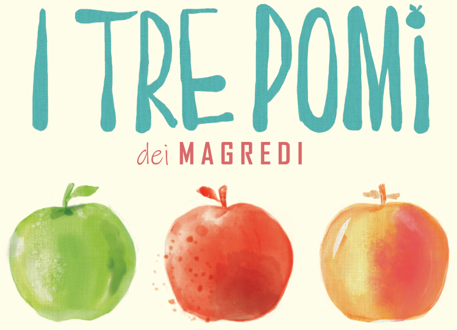

Una Spremuta genuina di mele friulane, coltivate con passione nel frutteto di famiglia. La sua semplice ricetta piace a grandi e piccini ed esalta i profumi, i sapori e le benefiche proprietà dei frutti appena colti.
Per info e ordini contattaci!